.Manipulating
Files and Directories
.Manipulating
Files and DirectoriesLinux Assignment
Commad Practice
1
.Manipulating
Files and Directories
Basic commands for files and directories are:-
cp-copy
mv-move/rename
mkdir-make directory
rm-remove
touch-create file
cat-inserting any text
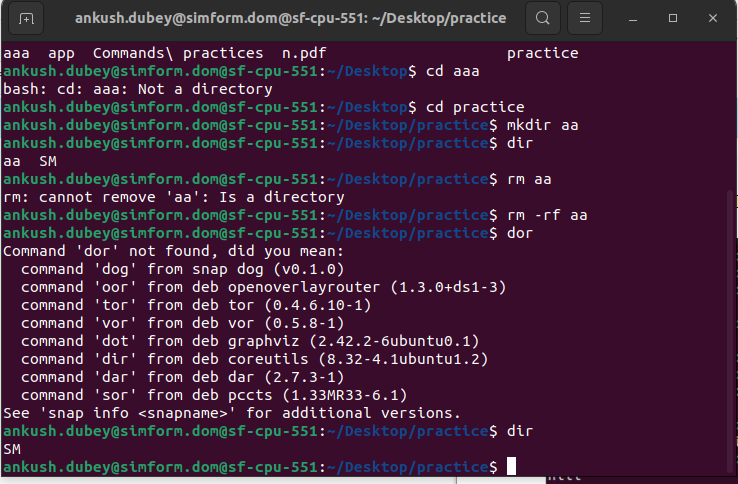
2.List all file permissions with example
Read – Can view or copy file contents
Write – Can modify file content
Execute – Can run the file (if its executable)
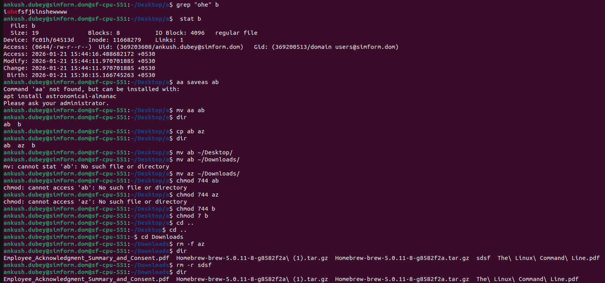
command:-
ps(currently running processes).

c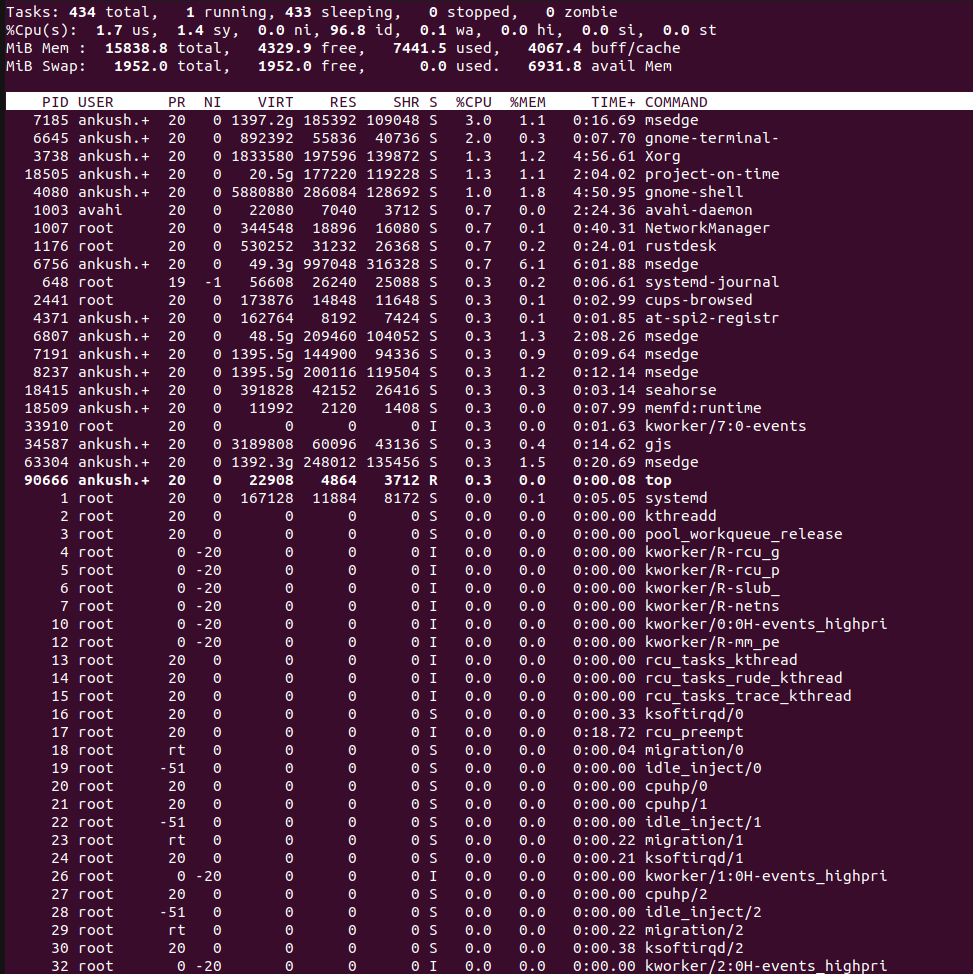 ommand :top( all tasks)
4.Find particular process by it's name
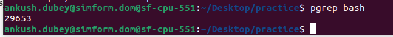
5. How to kill any particular process
Command: kill process_id
forcefully: kill -9 processs_id
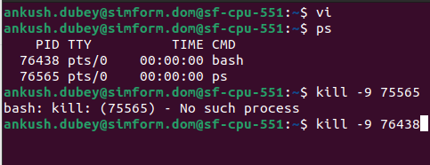
6. Vi or Vim for file editing
Vi file_name → For creating a file
i→ insert text
dd-delete texts
yy-copy
:wq → save and exit
:q! → exit without save
/ → search
:q → quit
%s/replacer/replacing/y → for substituete
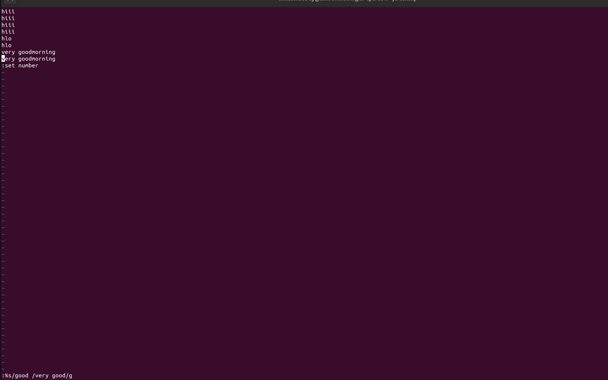
7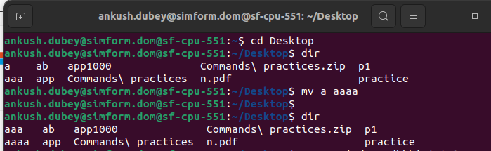 . Moving and Renaming Files
command- mv file1 file2
8. Remove Files and Directories
command:- rm file_name(removes file)
rm -r dir_name(remove dir)
rm -f file_name(remove file)

9. List the directory contents
command:- dir
10.How I can get the path of working directory.
Command: pwd(provides path of working directory)

command: /
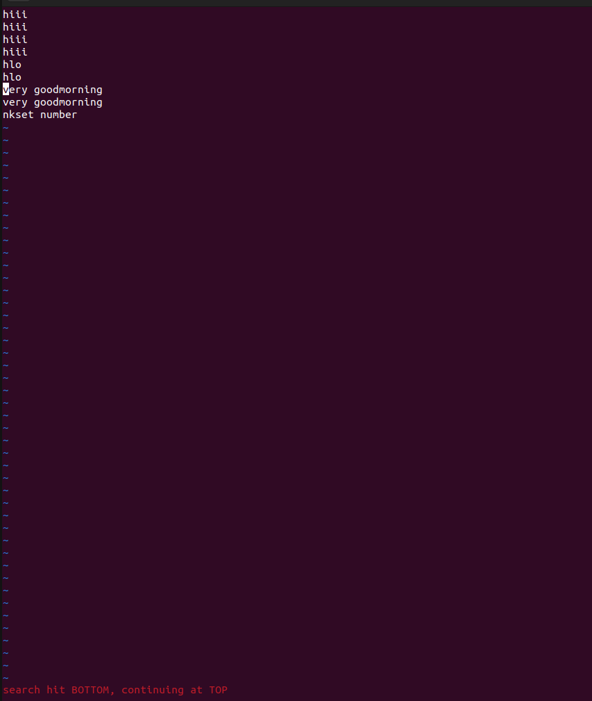
12.How Do You Do A Search And Replace in Vim/Vi
Command : - %s/replacer/replacement/y
13.How we can save and exit from Vim/Vi file.
Command:- :wq-Save and exit
:q-exit
:q! Exit without save
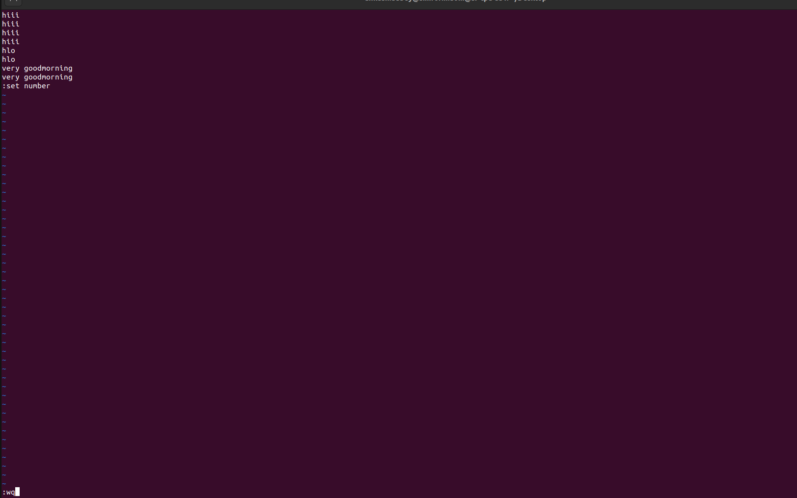
14. Change file owner and group.
Command: sudo useadd username
sudo chown name file_name
sudo groupadd group_name
sudo chown :mygroup file_name
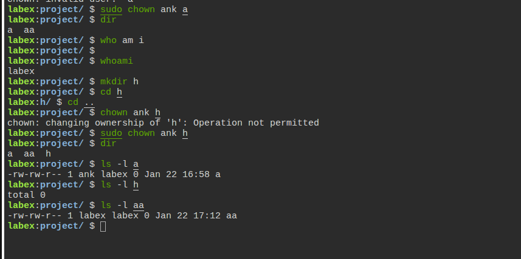 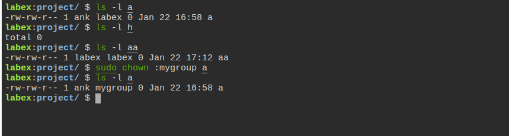
command:- chgrp groupname file_name

Ankush Dubey